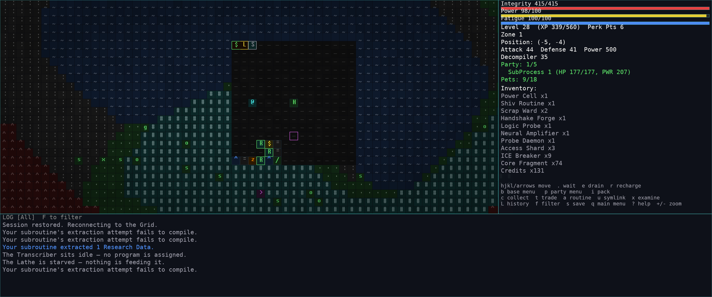
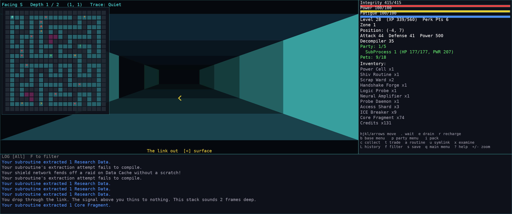

Tame the rogue programs you fight. Compile them into a base that runs itself. Then descend the Stack.
A Neuromancer/Tron-flavoured simulation of the Grid, blending Pokémon, Palworld and Dwarf Fortress. Your crew has opinions about the work. The towns out there have opinions about you. Built in Rust, with a headless sim that stays fully decoupled from what draws it.

What you actually do
Everything you beat is a candidate for your roster, and everything on your roster is labour you are not spending yourself.
Party-versus-party round battles with grouped enemies, where only the front groups can reach you. Wear a hostile down and run Decompile on it to add it to your roster; five can fight beside you at once.
Switch tactical surface battles on and a pack met in the open opens a board instead: cover, move-then-act turn order, routines with real shapes and ranges, and full friendly fire. Walk off the edge to leave a fight you don't want.
Abilities install into slots that arrive in pairs, twelve the ceiling for anybody. They come from species kits, the research tree, wild carriers and etched disks — and some run straight from the map as run-long buffs.
Post programs to structures and they work tick by tick wherever you are. Machines feed each other by touching, so a production line is a physical line laid across your base — and the whole grid runs on Power Cells somebody has to keep stocked.
Programs remember what happens to them — a machine that is always backed up, a post nobody can reach, being mauled, winning against the odds. Mood falls, and a sulking program refuses the job it resents. Push it further and it downs tools entirely.
Base staff burn two reserves as they work. A Sandbox and a Log Analyzer Bay answer them, needing no worker and no input, and a program running critical walks itself there and back without being told.
A beaten program is carried home whole — its level, its rarity, the state you left it in — and broken down with a tool. Strip it for components, tap its core, pull its gear, or read a routine off it and keep the routine.
Staff you are not fielding can be sent from a Dispatch Relay to a named site, where they fight real battles off-screen and come home with loot — or come home short. It costs you the bodies, the provisions and a share of what the kills would have paid.
Chosen per run. On Forgiving a fallen program is benched rather than destroyed and walks itself to a Repair Bay; on Permadeath a run that flatlines seals its own save. Achievements are the one thing that outlives a run, and they pay out at the start of the next.
Every one of those is a plain .ron file under
assets/. Drop another in and it is picked up next run — no
recompiling, no engine edits.
Settlements
Towns stand where the world seed puts them, and you find one by walking into it. Each has a counter that buys and sells, a temperament that prices both directions, and a specialty it leads with. What it does for you after that is entirely a matter of what you have done for it.
Standing is moved by deeds, not points. Finish a job for a town, clear a nest near it, collapse a Stack on its doorstep and it warms to you. Take a contract and abandon it and it cools. Both ends of the ladder are reachable in a run.
A town is not a fixed piece of scenery either. Every Server on the map is due to mature into a Mainframe city on a date the seed already decided. Trading pulls that date forward — but only so far, so money alone can never found one. A city you neglect starves back down without ever reverting to what it was.
The world is one continuous map for the length of a run. A breach raises the danger tier rather than rebuilding the sector, so your base, your structures and every town you have found are all still exactly where you left them on the far side.
A town's board draws on the same contract pool the Broker does, but it leads with what it deals in and settles at its own counter. A Materials town posts fetch jobs; a Programs town posts hunts.
Load a manifest at the Dispatch Relay, name a town you know, and Credits come home. Leave it standing and it keeps running until you sever it — hostile ground on the way notwithstanding.
Underground
Scattered across every zone are links down into the Stack — procedurally generated frames drawn in first person, where the fights are harder and the returns are better.
Deeper zones double every wild stat, and the only way into one is a portal you fund yourself — with fragments the Stack is the sole source of.

Media
Battles, base-building, towns and the deep frames — captures land here as they are recorded.
img/gameplay.mp4 or img/gameplay.gif
and swap this block — see the comment above this section
img/battle-map.pngimg/base.pngimg/town.pngimg/roster.pngInstall
You need the Rust toolchain. A debug build is a playable build here —
cargo run
is how the game is meant to be started.
The binary resolves assets/, saves/ and your
profile relative to the checkout at build time, so the clone needs to
stay put — even if you cargo install --path crates/launcher
to get it on your PATH.
# if you don't have Cargo yet $ curl --proto '=https' --tlsv1.2 -sSf https://sh.rustup.rs | sh # then $ git clone https://github.com/troglodyte/feral-processes $ cd feral-processes $ cargo run -p feral-processes
# New Game walks you through class, look, # stats, a starting routine and a name ? the manual, in game 1 2 3 the BASE / CREW / PACK column 4 contracts L every save (main menu) A your achievements (main menu) # autosaves every 50 ticks, into saves/
Moddable by design
Species, structures, items, routines, contracts, towns, sortie sites,
talents, research nodes, memories, needs and the rock underneath your
base are all plain .ron data. A malformed file is skipped
with a warning, never a crash — and a new field is always optional, so
nobody's mod stops parsing.
(
id: "null_pointer",
name: "Null Pointer",
glyph: 'n',
color: Magenta,
base_hp: 96,
base_atk: 18,
habitats: [StaticField, OpenGrid],
growth_multiplier: 1.4,
moves: [
(name: "Pointer Stab", power: 8, spread: 3),
],
abilities: [(id: "segfault", level: 6)],
)
Drop a 16×16 PNG into assets/sprites/ named for a species and
the map draws it in place of that glyph — tinted, so your art inherits the
danger colouring, the biome tint and the damage dimming for free.
Difficulty tuning is deliberately not data. Every knob the engine
hardcodes — scaling curves, XP, drop rates, raid pressure, need decay — is a
documented constant in crates/engine/src/tuning.rs. Content is
moddable; how hard the game is, is not.